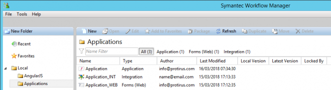
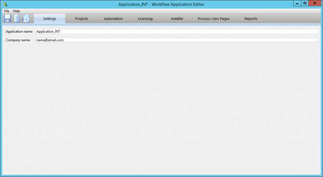
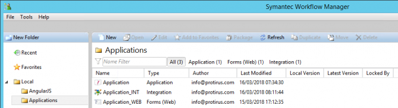

Workflow Projects allow you to change meta data like the "Name", "Author mail" and "Description" within the Project editor.
The Integration Project does not.
As you can see from this example an "Application" and "Forms (Web)" both have an Author that I have set but the "Integration" still shows name@email.com

You can use the Application Editor to do this.
Start > Programs > Symantec > Workflow Designer > Tools > Application Editor
"[Install Drive]:\Program Files\Symantec\Workflow\Designer\bin\WorkflowAppEditor.exe"
Open the ".SymWorkflow" file.
Amend the Company Name.

To your own email address.
And now we have an Author!

Code
If you convert the INT into a .zip and extract then open the
IStorableObject.xml
You will see that there is a "createdBy" value.
<Value id="createdBy" type="data" val="name@email.com" />
This is changed by the Application Editor.
I'd like this option to be made available in Integration Editor instead.